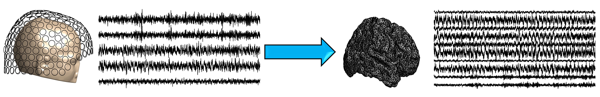

"Neuroimaging" refers to obtaining a picture of the brain. There are two main classes of neuroimaging. Structural neuroimaging, such as CT or MRI scans, involves obtaining a picture of the structure of the brain or how it is wired up. Conversely functional neuroimaging, including magneto- or electro-encephalography and functional MRI, images the activity of the brain over time. The figure below shows an example of functional and structural neuroimaging - in the background (black and white picture) is an MRI scan showing the structure of the brain (structural imaging), whilst overlaid (yellow/red pixels) shows which parts of the brain are active at a single time point (functional imaging). My research focuses primarily on functional neuroimaging.

Functional neuroimaging is crucial to understand the activity of the brain. Firstly, it can help with understanding how the healthy brain works. For example, questions that can be answered with functional neuroimaging include "which areas of the brain become active during a certain task?", or "how do different areas of the brain work together?".
Secondly, it can be useful for understanding what is pathological brain activity in neurological diseases. A focus of my research is uncovering how dysfunctional brain activity underpins cognitive impairment in dementias such as Alzheimer's disease.
Finally, functional neuroimaging is useful as a diagnostic tool in the clinic. At present a type of functional neuroimaging called EEG (see below) is used to diagnose epilepsy. I am interested in adapting EEG to aid with diagnosing Alzheimer's disease at stages before a diagnosis can be made based on cognitive symptoms.
While there are many different types of neuroimaging, my primary interests are in magneto- and electro-encephalography (MEG/EEG respectively). When parts of the brain become active, they create an electric and magentic field, which conduct outside the head. MEG/EEG place sensors outside the head (MEG) or on the scalp (EEG) to record the resulting magnetic/electric fields.
In the picture above, the functional activity was recorded from EEG. But if EEG is recorded using sensors placed on the scalp, then why is the activity not shown on the surface of the head? The answer is because source reconstruction was used on the EEG. Source reconstruction is the process of estimating where in the brain the M/EEG activity originated from.
Conceptually (and mathematically!), it is analogous to a version of the 'cocktail party problem': If there are people in a room conversing at a cocktail party, and I place microphones around the room, can I guess who was standing where and what they were saying based only on the microphone recordings? The people in the room are parts of the brain, their conversation is the brain activity, and the microphones are the M/EEG sensors.
Unfortunately, there is no 'unique' solution to source reconstruction, because there are many many more neurons in the brain (86 billion) than sensors in MEG (typically 200-300) or EEG (typically 19-300). This is known as an 'underdetermined' problem, and is similar to asking "if A+B=10, then what are A and B?". There are an infinite number of pairs of A and B that sum to make 10. A key research interest of mine is how we can make a 'best guess' of the source reconstructed activity. Additionally, these best guesses often blur the solution, so I am interested in developing ways to counteract this problem.
Once we have imaged the brain, we have to define regions of the brain to study. To get the most from our data, these regions should be defined meaningfully and not just chosen at random. This is often done using a map of brain regions, called an atlas. Probably the most detailed atlas available to date was developed by the Human Connectome Project by looking at brain structure, function and activation during a range of tasks, and connectivity. We have developed an atlas designed for use with MEG based on the Human Connectome Project's atlas. This atlas is shown below on a smoothed brain surface.

The focus of this page has been on MEG and EEG, which are methods of imaging the whole brain, and are the primary focus of my recent research. However, there are many other methods for functional imaging of the brain, at a range of scales. I have experience working with a range of other methods, primarily in rodent models of Alzheimer's disease. During my PhD, I spent six months working in a patch clamp lab, recording the activity of single neurons. I additionally have interest in modalities such as local field potential recordings, which are highly similar to EEG but are invasive so typically only record a single region of the brain at a time, and two-photon calcium imaging, which records the activity in a group of neurons by imaging the amount of calcium in the cell (which increases as the cell becomes more active). By combining neuroimaging at multiple scales, a more detailed description of the brain can be obtained.
Simulations of patch clamp, local field potential, and EEG/MEG experiments can be found on the brain simulator page.